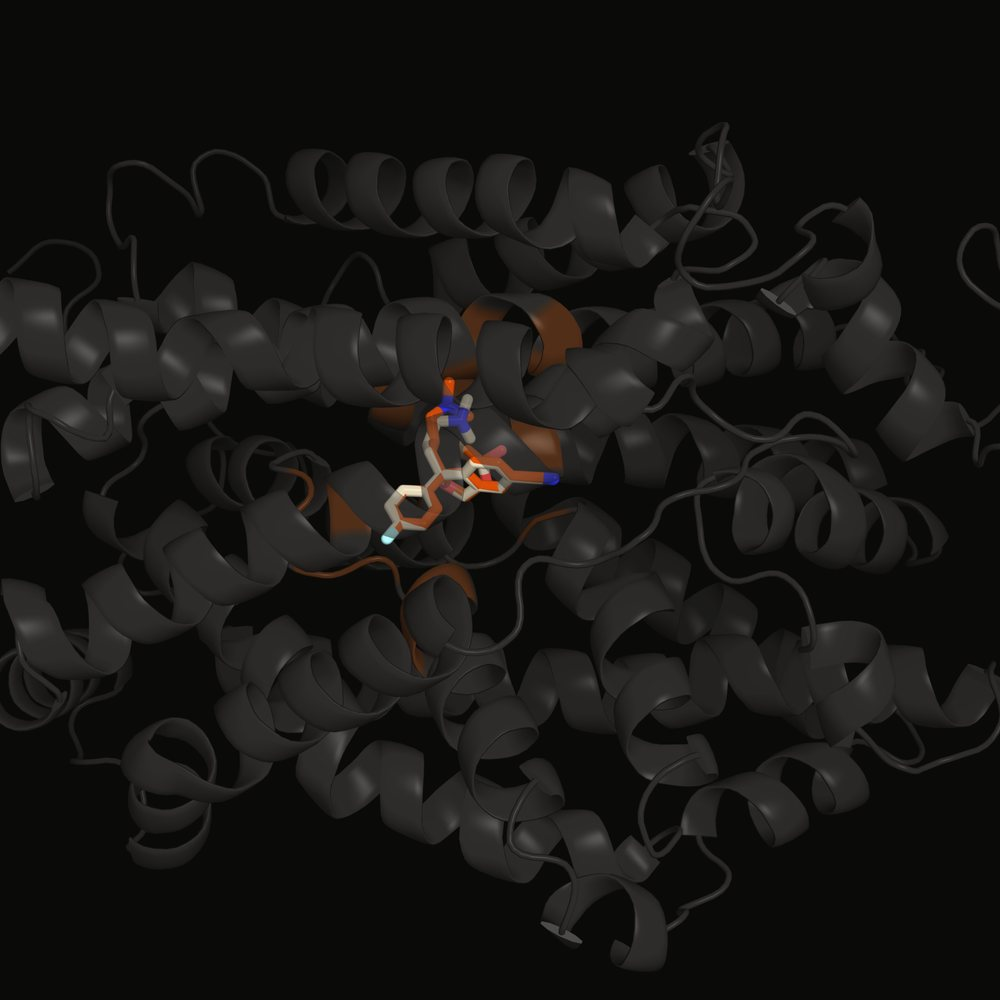
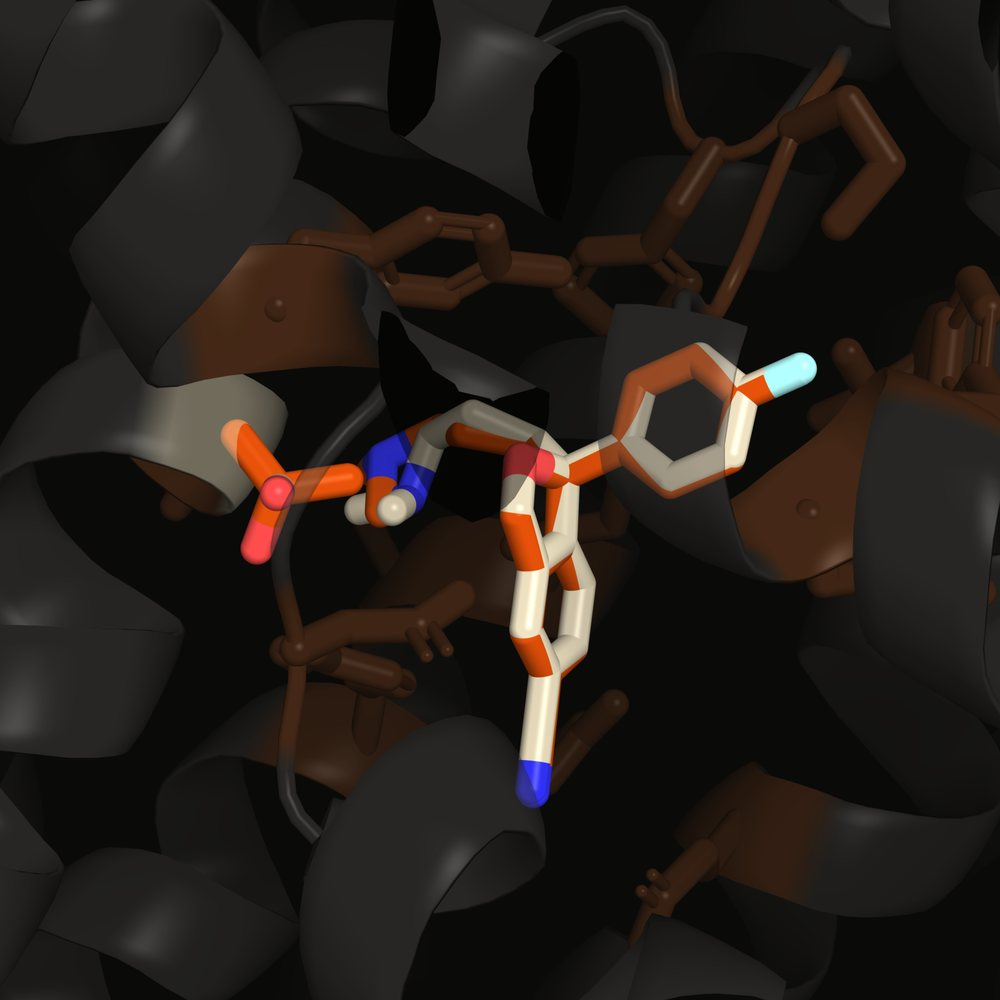

The S438T substitution in the serotonin transporter weakens escitalopram binding about 320-fold in the lab. This project asks how much of that a docking model can see from structure alone. Across five seeds and two receptor models, it predicts the right direction; the size of the effect is the question molecular dynamics is set up to answer.
Escitalopram docked into the central S1 site of human SERT (PDB 5I6Z, chain A). The wild-type pose is in cream and the S438T pose in orange, with residue 438 drawn as sticks.


Top-ranked Vina poses · binding-site residues within 5 Å in brown · rendered in PyMOL from output/docked_wt.pdbqt and docked_s438t.pdbqt
The two poses almost coincide. Whatever S438T does to escitalopram, it does not do it by moving the drug to a different place in the pocket, and that shapes what docking can and cannot measure here.
Re-run across five seeds at exhaustiveness 32, in both a rigid receptor and one with flexible binding-site side chains. Each circle is one seed; the bar is the mean.
Seeds 42 · 123 · 456 · 789 · 1001 · hover a point for its value · box 25 Å cubed
The two clusters do not overlap, in either model. In the rigid run, wild-type spans −8.596 to −8.563 and the mutant −8.322 to −8.290, with nothing in between. Seed-to-seed spread there is 0.013 to 0.015 kcal/mol; the gap between the groups is about twenty times that.
| Receptor model | Wild-type (Ser438) | S438T (Thr438) | ΔΔG |
|---|---|---|---|
| Rigid | −8.575 ± 0.013 | −8.306 ± 0.015 | +0.269 |
| Flexible side chains | −8.527 ± 0.003 | −8.317 ± 0.014 | +0.210 |
kcal/mol, mean ± SD across five seeds · ΔΔG = S438T − wild-type
Both models now agree on the direction, and they agree with each other to within 0.06 kcal/mol. The sign is stable; that is all the sign is being asked to do.
The experimental 320-fold Ki increase (Andersen et al., 2009) corresponds to roughly +3.4 kcal/mol. Docking returns +0.27. The direction is right and the magnitude is off by about thirteen times.
That gap is what the method predicts for a mutation like this one. Rigid docking scores a static bound pose; it does not model the desolvation penalty or the disrupted Na⁺ coordination that S438T is thought to cause, and those act on the pathway into the site rather than on the final pose, which the figure above shows barely changes. The MD pipeline for wild-type and S438T is staged in the repository; the magnitude waits on that run.
An earlier single-seed run (exhaustiveness 8) gave ΔΔG = −0.2 kcal/mol, inside that run's own search noise. The five-seed results above replaced it on 27 October 2026, and the repository README carries the same dated note.